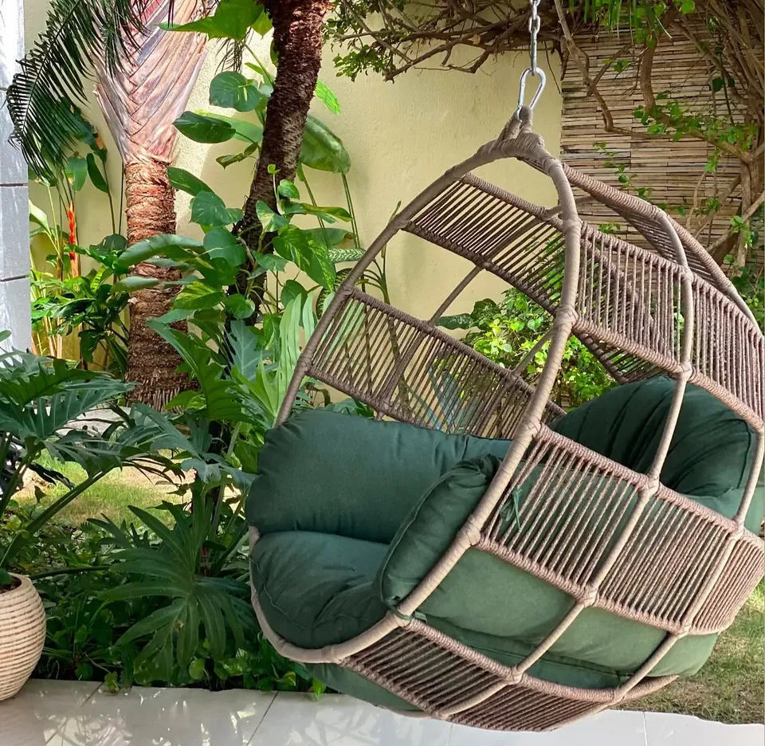
Poltronas e cadeiras
Fibra natural · almofadas verdes
Pedir orçamento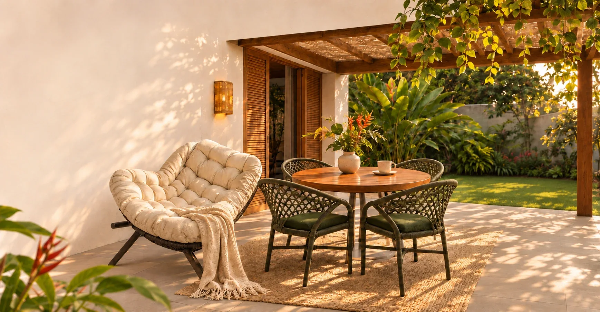
Móveis e decorações artesanais e orgânicos para sua casa, jardim e varanda
Encontre móveis que aproximam pessoas e convidam a ficar.
Encontre a sua peçaConheça a trama, o toque e os detalhes de uma peça que convida a desacelerar.
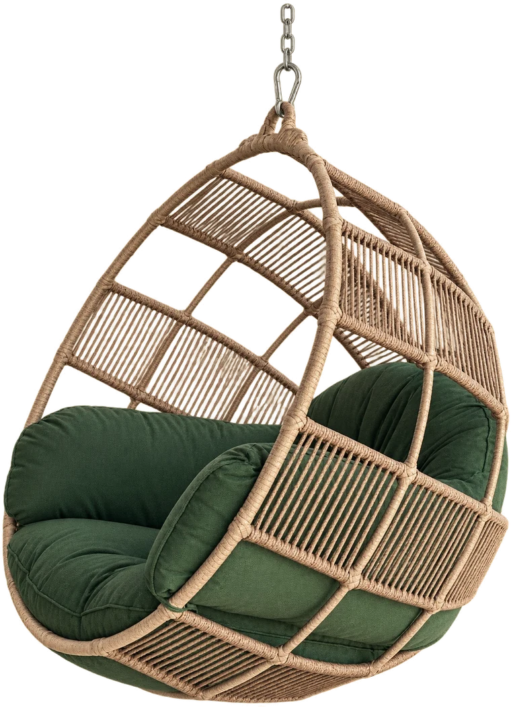
Viver bem começa nos seus momentos de pausa.
Conjuntos de jantar, estar e poltronas em fibra para varanda, jardim e área gourmet. Toque em uma peça para ver os detalhes e pedir orçamento pelo WhatsApp.

Poltronas e cadeiras
Fibra natural · almofadas verdes
Pedir orçamento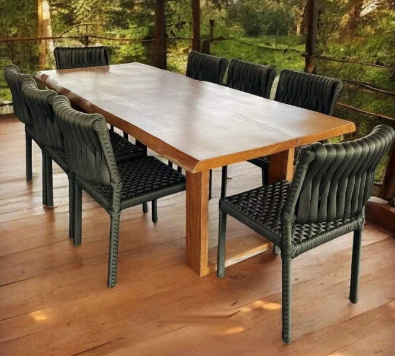
Conjunto de jantar
8 cadeiras em corda · bordas orgânicas
Pedir orçamento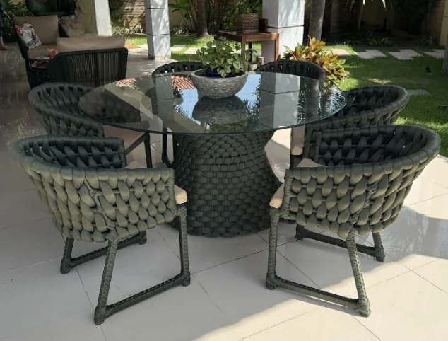
Conjunto de jantar
Tampo de vidro · cadeiras em corda verde
Pedir orçamento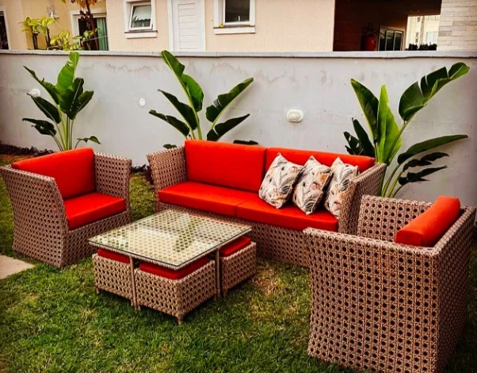
Estar
Sofá, 2 poltronas, mesa e 4 pufes
Pedir orçamento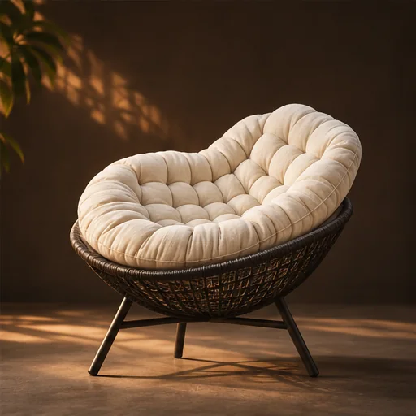
Poltronas e cadeiras
Estofado claro · estrutura trançada
Pedir orçamento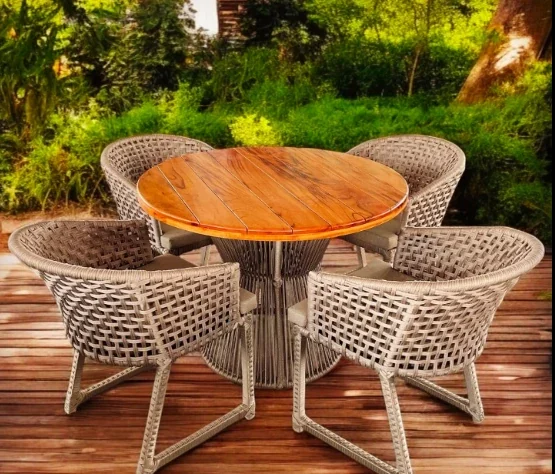
Conjunto de jantar
4 cadeiras em trama · tampo de madeira
Pedir orçamento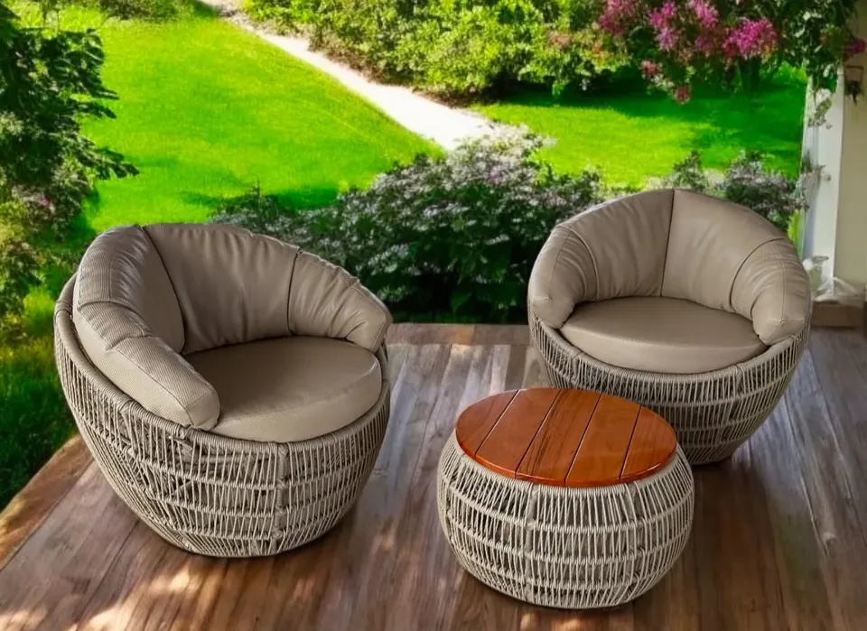
Estar
2 poltronas redondas · mesa de centro
Pedir orçamento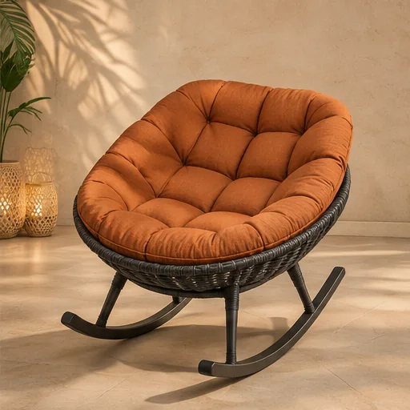
Poltronas e cadeiras
Estofado capitonado · base de balanço
Pedir orçamento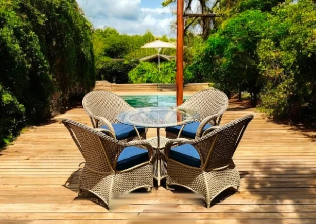
Conjunto de jantar
4 poltronas em fibra · tampo de vidro
Pedir orçamento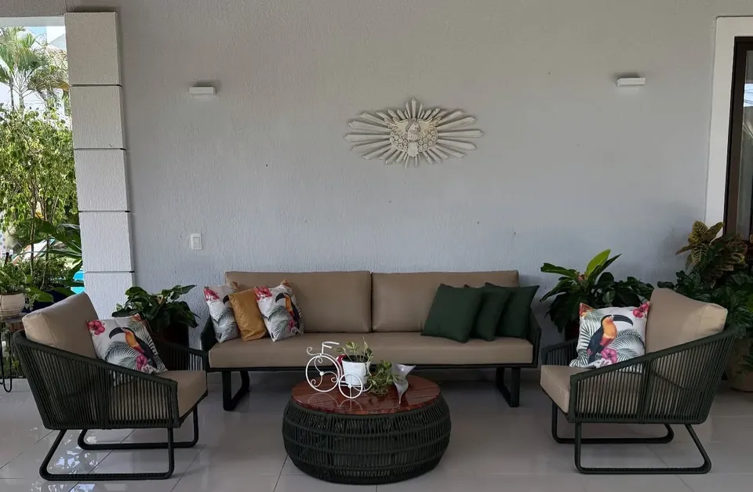
Estar
Sofá, 2 poltronas e mesa de centro
Pedir orçamento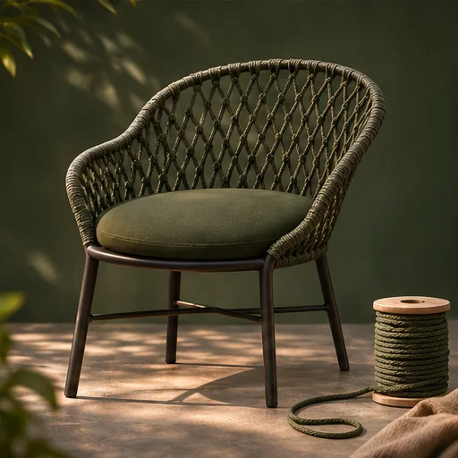
Poltronas e cadeiras
Trama em corda · linhas curvas
Pedir orçamentoMande uma foto ou descreva o que você imagina para o seu espaço. A gente ajuda a encontrar a peça certa.
É na conversa que se estende. Na pausa do fim da tarde. No lugar que, aos poucos, se torna o seu favorito.
Entre tramas, madeira e estofados, a gente ajuda você a encontrar peças que fazem sentido para o seu espaço e o seu jeito de viver.
Cada entrega é uma casa que ganha um novo lugar favorito. Estas são algumas delas.
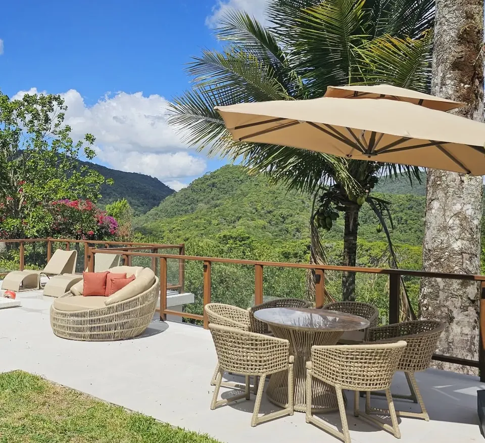
Escolha a peça que chamou sua atenção e fale com a gente pelo WhatsApp. Enviamos medidas, composição da estrutura e orientações de uso antes de você decidir.
Sim. Consulte as opções disponíveis para cada modelo. As imagens desta página são referências visuais; confirmamos cores, tecidos e acabamentos no atendimento.
Mande o modelo que você quer e a sua cidade ou bairro. Respondemos com disponibilidade, valor, prazo e condições de entrega.